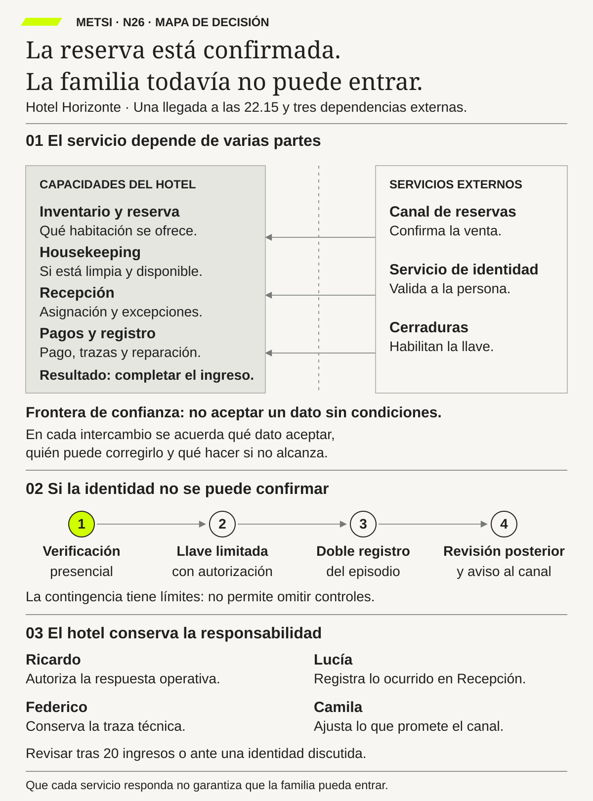

Fernando Flores
Creando organizaciones para el futuroDolmen · 1997
Permite reconocer pedidos, promesas y reparaciones entre personas y organizaciones que necesitan coordinarse.

Arquitectura de servicios, plataformas y dependencias de terceros
Una promesa distribuida exige compromisos explícitos entre capacidades autónomas y una salida verificable.
Un servicio, muchas organizaciones
Ruta priorizada: 1 h 20 min a 1 h 40 min. Núcleo de lectura: 60 a 75 min; preparación: 20 a 25 min. Las extensiones agregan 30 a 45 min y profundizan el recorrido.

Nota. SIN NUM. identifica aparatos de orientación y referencia.
Seis referentes y las obras principales utilizadas para construir N26.
Permite reconocer pedidos, promesas y reparaciones entre personas y organizaciones que necesitan coordinarse.

Ayuda a pasar de una etiqueta técnica a una explicación de qué relaciones produjeron el resultado.

Aporta una mirada sobre plataformas, participantes y reglas que distribuyen valor y oportunidades.

Permite examinar efectos de red y decisiones de apertura y gobierno sin confundirlos con mera conectividad.

Ayuda a relacionar diseño de plataforma e interacción entre los grupos que la utilizan.

Permite discutir costos de coordinación y las decisiones sobre qué sostener dentro de una organización y qué confiar a terceros.
N26 no resume estas fuentes ni las convierte en receta. Las pone en tensión para construir juicio profesional.
¿Cómo respondemos por un servicio que depende de otras áreas, plataformas y proveedores que no podemos controlar por completo?

Cada dependencia necesita confianza, responsabilidad, degradación prevista y una salida verificable.
Imaginá esta situación ficticia. Una pasajera llega a la puerta de embarque. Tiene pasaje y documentación; ya pasó los controles correspondientes. La aplicación de la aerolínea muestra su tarjeta de embarque. Sin embargo, el sistema de la puerta conserva una modificación del vuelo que la aerolínea había revertido. La información no coincide y el ingreso queda detenido.
Faltan once minutos para el cierre. El personal ve el problema, pero no tiene autoridad para modificar cualquier registro de otra organización. La pasajera pregunta qué debe hacer. Recibe explicaciones sobre sistemas que no conoce y que tampoco puede corregir.
Los indicadores locales parecen normales: venta confirmada, pago registrado, sistemas conectados. Eso no significa que el servicio haya funcionado. La pasajera necesitaba viajar; no necesitaba que cada aplicación aprobara su propio control.
El equipo encuentra tres explicaciones posibles. Tal vez un cambio llegó tarde. Tal vez «reprogramado» significa una cosa para la aerolínea y otra para el operador de la puerta. O tal vez falta un acuerdo sobre quién decide cuando los registros discrepan. Reintentar una conexión sólo ayudaría en algunos de esos casos.
La escena no se resuelve inventando un permiso para embarcar ni salteando controles de seguridad. En este ejemplo, las organizaciones responsables cuentan con una vía autorizada para revisar inconsistencias. Verifican las condiciones necesarias, registran la decisión y, si pueden acreditarlas, resuelven el embarque por ese procedimiento. Si no pueden acreditarlas, deben informar y atender la situación por otra vía válida. La urgencia no convierte una suposición en autorización.
Supongamos que esa verificación permite el embarque. El problema de fondo todavía no terminó. Hubo trabajo adicional y una contradicción que debe reconciliarse. El equipo revisa otros veinte cambios recientes de vuelo para entender qué ocurre y quién puede actuar. Es una muestra didáctica para investigar episodios, no una demostración de confiabilidad general.
El servicio depende de aerolínea, aeropuerto, sistemas de identidad, equipaje y proveedores técnicos. Ninguno controla todo. Eso no hace imposible coordinar: obliga a acordar qué necesita cada parte, qué puede prometer y qué hará cuando la cooperación falle.
N26 estudia esa red. La llamaremos ecosistema de servicio. El término importa menos que la pregunta que lo vuelve útil: cuando una persona queda detenida entre dos organizaciones, ¿quién puede ayudarla y con qué medios?
Son las 22.15. Una familia llega al Hotel Horizonte con una reserva prepagada de un canal externo. Es una reserva de la operación existente, no una ampliación comercial que HH-24 hubiera autorizado. Postergar nuevos canales no elimina las dependencias de los que el hotel ya utiliza.

Lucía encuentra la reserva, pero el sistema de gestión del hotel —PMS— muestra pendiente la validación de identidad. Mariela tiene el registro de limpieza. Camila puede mostrar la confirmación comercial. El servicio de cerraduras no permite emitir el acceso por el recorrido habitual. La habitación limpia, la reserva pagada y la confirmación no bastan para completar esa llegada.
Federico comprueba que las conexiones responden. El problema no es que toda la tecnología esté caída. Hay afirmaciones distintas sobre la misma situación y ninguna, por sí sola, autoriza el recorrido completo. «El canal confirmó» no demuestra que todas las comprobaciones del hotel se hayan realizado.
Ricardo reconstruye qué hace Recepción cuando ocurre algo parecido. Encuentra verificaciones presenciales y decisiones de guardia que no aparecen en el diagrama técnico. Comparar apellidos puede ayudar a localizar un registro, pero no basta como prueba de identidad ni como autorización de acceso. Las comprobaciones admitidas deben estar definidas y ser realizadas por personal competente.
Elena pide que se atiendan dos frentes al mismo tiempo. Federico debe investigar con los proveedores y conservar evidencia. Operaciones debe resolver qué atención segura puede ofrecer a la familia mientras esa investigación continúa. «Ya abrimos un reclamo» no es todavía una respuesta para quien está en el mostrador.
En el caso se utiliza una contingencia autorizada: verificación presencial conforme al procedimiento, comprobación de asignación y condiciones de la habitación, y acceso limitado emitido sólo por personal habilitado cuando se cumplen los requisitos. No se marca como exitosa la verificación externa que sigue pendiente. Se registra qué evidencia se usó, quién decidió y qué debe reconciliarse después.
Si alguna condición indispensable no puede comprobarse, esa contingencia no se aplica. El hotel debe activar una alternativa segura y explicarla. Tampoco entrega una habitación inadecuada porque la cerradura abra: el acceso operativo y los requisitos de accesibilidad siguen siendo cuestiones diferentes.
Lucía conduce la atención del episodio. Ricardo coordina la respuesta operativa con la autoridad y los reemplazos acordados. Federico trabaja sobre las conexiones y sus registros. Mariela confirma el estado material. Camila revisa que el canal no ofrezca un ingreso instantáneo donde existen condiciones pendientes. Elena resuelve compromisos y recursos que exceden las atribuciones del turno.
Una vez atendida la familia, queda trabajo. Hay que reconciliar la validación, revisar la vigencia del acceso y evitar duplicar reserva o cobro. También hay que observar si otro turno puede ejecutar el procedimiento sin recurrir a favores personales. Resolver una vez con todo el equipo presente no demuestra que la contingencia esté preparada para todos.
El acuerdo se revisará después de veinte ingresos del canal o antes si aparece una identidad controvertida, un incidente relevante o una falla de la contingencia. Veinte es una cadencia de revisión del ejercicio, no un umbral que garantice seguridad. Una discrepancia grave exige atención inmediata, no esperar a completar la muestra.
HH-26 deja un mapa con dependencias y responsabilidades. Todavía falta precisar qué significa cada estado y qué deben hacer las partes si llega tarde o se contradice. Ese será el trabajo de N27.
Cuando un servicio depende de varias organizaciones, no alcanza con administrar bien la parte propia. También hay que comprender las relaciones que permiten completar la promesa. Para cada dependencia importante necesitamos saber qué aporta, qué garantiza, qué no garantiza y qué alternativa existe si falla.
Pensemos en una compra con envío. La tienda cobra, el depósito prepara y una empresa transporta. Si el paquete no llega, la persona necesita una respuesta que conecte esas partes. Mostrar que el cobro fue correcto y que el depósito cerró su tarea no resuelve la entrega. Tampoco sirve remitirla indefinidamente de un contacto a otro.
Eso no significa que la tienda pueda dar cualquier orden al transportista o modificar sus registros. Significa que debe tener acuerdos, información y capacidad para coordinar una respuesta dentro de sus responsabilidades. Cuando hace falta otra autoridad, debe saber cómo convocarla y qué puede hacer mientras tanto.
El servicio se vuelve más gobernable cuando las dependencias dejan de ser flechas anónimas. «Depende de identidad» es poco. «Necesita esta comprobación, con esta vigencia; si no llega, el turno puede hacer esta verificación autorizada o activar esta alternativa» permite actuar y discutir límites.
La confianza tampoco se concede de una vez a un proveedor entero. Un canal puede ser una fuente adecuada sobre la compra que registró y no tener autoridad para afirmar el estado material actual de una habitación. Hay que verificar cada afirmación según su propósito y sus consecuencias.
El objetivo no es eliminar toda dependencia. Comprar un servicio especializado puede ser una buena decisión. El problema aparece cuando confundimos contratar con controlar, disponibilidad técnica con resultado, o un archivo exportado con la posibilidad real de cambiar de proveedor.
La tesis de N26 es que coordinar, atender fallas y preparar una salida forman parte del diseño del servicio. No son conversaciones que conviene inaugurar cuando una familia ya está esperando a las 22.15.

Primero seguí una llegada que depende de más de un servicio y ubicá quién responde cuando una conexión falla. Mapa, acuerdo y capacidad son las tres piezas esenciales. Tipos de plataformas, proveedores y salida amplían el análisis; recuperá N19/N21 cuando necesites ese detalle. No dibujes todo el ecosistema para resolver una dependencia concreta.
N25 siguió modificaciones desde una necesidad reconocida hasta su uso. Mostró colas, esperas y transferencias. N26 amplía la mirada: algunas esperas y decisiones ocurren en organizaciones con otras prioridades, contratos y horarios.
En HH-25, una regla podía esperar validación de Operaciones. En HH-26, una validación puede depender de un proveedor que atiende a muchos clientes. El hotel no puede reorganizar unilateralmente su trabajo. Necesita saber qué acuerdo tiene y qué hará si la respuesta no llega a tiempo para la persona.
El mapa temporal anterior sigue sirviendo, pero se agregan fronteras de autoridad y confianza. No se trata sólo de encontrar el tramo más lento. También de distinguir quién puede cambiarlo, qué evidencia puede obtenerse y qué riesgo se acepta al depender de él.
N27 tomará los vínculos críticos y precisará sus contratos de intercambio. N26 prepara esa tarea: identifica cuáles importan y por qué. Un contrato detallado sobre una dependencia secundaria no compensa haber omitido la autorización que bloquea toda la llegada.
ITIL 4 y la norma de gestión de servicios citada ayudan a mirar resultados, relaciones y responsabilidades de operación. No se usan como un catálogo de procedimientos que deba copiarse completo. La pregunta sigue siendo qué necesita esta promesa para sostenerse.
Parker, Van Alstyne y Choudary estudian plataformas que coordinan grupos de participantes. Tiwana relaciona arquitectura y gobierno de plataformas. Skelton y Pais miran cómo plataformas internas e interacciones entre equipos pueden facilitar o dificultar el trabajo. Más adelante distinguiremos esos tipos de plataforma para no atribuirles las mismas propiedades.
Ross, Weill y Robertson relacionan arquitectura con capacidades y formas de operar. Hohpe y Woolf aportan patrones para intercambios y mensajería. Sus herramientas técnicas ayudan a diseñar conexiones, pero el mapa debe incluir también decisiones y tareas humanas.
Las publicaciones de NIST permiten examinar riesgo de proveedores y criterios de confianza. CISA pone atención en responsabilidades de seguridad del diseño y de quienes ofrecen productos. Estos marcos no autorizan a aceptar cualquier afirmación contractual ni sustituyen una evaluación adecuada al contexto.
Coase ayuda a pensar qué coordinaciones se sostienen dentro de una organización y cuáles se confían a terceros. Mintzberg y Cockburn permiten observar estructuras, comunicación y cooperación. FinOps agrega la responsabilidad por uso y costo tecnológico; no reduce la decisión a ahorrar en la factura.
Flores, Bunge, García y los demás autores regionales de la bibliografía permiten discutir compromisos, mecanismos y relaciones situadas. La falla se entiende siguiendo qué ocurrió entre las partes, no usando «ecosistema» como un nombre sofisticado para una lista de marcas.
Para construir el mapa, empezá por una frase que una persona pueda entender: «La familia puede ingresar a una habitación adecuada conforme a su reserva y a las condiciones del servicio». Después preguntá qué tiene que ocurrir para sostenerla.
Una promesa así necesita límites. ¿En qué horario? ¿Con qué verificaciones? ¿Qué se informó a la persona? No se puede usar «ingreso confirmado» para prometer inmediatez si todavía falta una condición que puede bloquearlo. El mensaje comercial forma parte del sistema que estudiamos.
El ecosistema de servicio reúne participantes que contribuyen a ese recorrido y conservan distintos grados de autonomía. Incluye áreas internas, proveedores y otras organizaciones. Sus objetivos no siempre coinciden, y sus relaciones pueden existir aunque nadie haya dibujado un mapa conjunto.
No hace falta representar todo el mundo. El alcance se define por la promesa y por las dependencias capaces de afectarla de manera relevante. Un mapa demasiado pequeño oculta causas; uno que incluye todo sin criterio no ayuda a decidir.
Una capacidad de servicio reúne medios para lograr un resultado bajo condiciones definidas: personas, información, tecnología y autoridad. «Tenemos cerraduras digitales» describe una compra. «Podemos emitir y corregir un acceso autorizado durante una llegada nocturna» describe algo que debe poder comprobarse.
Para probar la capacidad hay que mirar un recorrido, no sólo una función. Una cerradura puede responder, pero recibir una autorización de una reserva equivocada. Una persona puede tener el permiso correcto, pero no estar disponible en el turno necesario. La capacidad depende de esas relaciones.
También hay que declarar el apoyo requerido. Si sólo Federico entiende cómo resolver la excepción, existe conocimiento útil, pero concentrado. La organización debe asegurar reemplazo, acceso e instrucciones antes de prometer que cualquier turno puede responder. No se trata de negar el valor del especialista, sino de no esconder esa dependencia.
La evidencia combina éxito, demora, excepción y reparación. Si sólo medimos respuestas del sistema, perdemos lo que hizo Recepción por fuera. Si sólo preguntamos si la familia ingresó, podemos perder una solución improvisada que no sería segura repetir.
En el mapa pueden aparecer hotel, canal de reservas, proveedor de identidad y proveedor de cerraduras. Pero cada vínculo necesita una explicación. Uno transmite una reserva; otro aporta una comprobación; otro ejecuta una autorización. No son intercambios equivalentes.
También se distinguen relación contractual, conexión técnica y dependencia operativa. Tener un contrato no demuestra que el proveedor responda dentro del tiempo que necesita la llegada. Tener una API conectada no demuestra que los datos signifiquen lo mismo. Depender de una decisión manual no vuelve esa decisión menos real por no tener una API.
La dirección del vínculo importa. El canal puede informar una modificación al hotel y necesitar después una corrección del hotel. Si el mapa sólo muestra el envío inicial, oculta cómo se resuelve la contradicción. La reparación también tiene recorrido y responsables.
Una plataforma compartida ofrece capacidades que otros utilizan para construir u operar servicios. Por ejemplo, varios recorridos pueden usar el mismo servicio de identidad o mensajería. Compartir puede evitar duplicación y concentrar conocimiento especializado.
Pero también concentra dependencia. Si todos necesitan la misma plataforma para una acción crítica, un problema puede afectar a muchos. Sus prioridades, cambios y condiciones de acceso dejan de ser un asunto interno del equipo que la administra.
Para evaluar una plataforma interna preguntamos si sus usuarios pueden descubrir cómo usarla, probarla, comprender sus límites y pedir ayuda. También cuánto cuesta integrarse y cambiar de versión. Si cada excepción requiere un favor del equipo central, la plataforma existe, pero su promesa de autonomía es débil.
No conviene medir sólo la cantidad de consumidores. Una adopción obligatoria puede aumentar ese número sin mejorar la experiencia. El tiempo hasta un uso útil, el esfuerzo de soporte y las dificultades de salida aportan otra información.
Un canal que conecta hoteles con huéspedes puede funcionar como plataforma multilateral: organiza interacciones entre grupos. Sus reglas de visibilidad, acceso, comisión y datos afectan a los participantes. Parker, Van Alstyne y Choudary ayudan a estudiar esa configuración.
Una plataforma interna de identidad tiene otra función. Puede servir a muchos equipos, pero compartir un servicio no demuestra por sí solo un efecto de red de mercado. Los efectos de red aparecen cuando el valor para participantes cambia por la presencia o actividad de otros; no se deducen contando conexiones.
La diferencia cambia qué observamos. En la plataforma interna, importa cómo facilita el trabajo y qué dependencia crea. En el canal externo, también importa quién puede cambiar reglas comerciales, ordenar ofertas o restringir acceso a información. Llamar «plataforma» a ambas no borra esas diferencias.
En cualquiera de los dos casos necesitamos conocer quién decide, quién financia y cómo se comunica un cambio. Un estándar común puede facilitar cooperación; una imposición que desconoce casos legítimos puede trasladar trabajo a otras áreas. Eso se comprueba en recorridos, no en el nombre del producto.

Cuando un servicio depende de varias organizaciones, no alcanza con administrar bien la parte propia.
Un tercero crítico es un participante externo cuya falla o decisión puede impedir una parte importante de la promesa. Su criticidad no depende sólo de cuánto se le paga o de cuántas veces se lo usa.
Pensá en una escuela que imprime diplomas una vez al año mediante un proveedor. El gasto puede ser pequeño. Si ese servicio no tiene reemplazo cerca de una fecha importante, la consecuencia puede ser grande. La frecuencia baja no basta para declararlo irrelevante.
En el hotel, un servicio de identidad puede tolerar cierta espera durante una consulta anticipada y bloquear una llegada a medianoche. El mismo proveedor tiene consecuencias distintas según el episodio. Conviene registrar población, momento, tiempo tolerable y alternativa.
Un SLA, acuerdo de nivel de servicio, puede definir compromisos medibles y consecuencias contractuales. Es útil, pero hay que leer qué cubre: disponibilidad, tiempo de respuesta, resolución u otra condición. Que el proveedor cumpla su medición no demuestra que el huésped haya podido ingresar a tiempo.
Tampoco una certificación responde todas las preguntas. Puede aportar evidencia sobre controles o prácticas dentro de un alcance. No prueba automáticamente que esta integración, este turno y esta contingencia estén preparados.
La criticidad debe revisarse. Puede bajar si se incorpora una alternativa probada o subir si nuevos servicios pasan a depender del mismo proveedor. Una etiqueta puesta al contratar no sustituye esa observación.
Nombrar una persona responsable es fácil. Darle medios para responder es otra cosa. Si Ricardo figura como responsable de la llegada, pero no puede convocar apoyo, activar una contingencia o solicitar una decisión, su nombre no resuelve el vacío.


La responsabilidad sobre una capacidad necesita información, autoridad y recursos proporcionales. No significa ejecutar todo personalmente ni estar disponible veinticuatro horas. Requiere roles, turnos y reemplazos, además de saber qué decisiones exceden su atribución.
En HH-26, Lucía atiende y decide dentro del procedimiento. Ricardo coordina Operaciones. Federico investiga lo técnico. Elena puede modificar recursos o compromisos mayores. El acuerdo debe indicar qué pasa cuando uno no está. Si la solución depende de llamar al teléfono personal de una sola persona, hay una fragilidad que debe reconocerse.
La coordinación de punta a punta tampoco concede poder absoluto sobre terceros. El hotel puede exigir lo pactado, negociar, limitar una promesa o activar una alternativa. No puede ordenar cualquier cambio en sistemas ajenos. El mapa debe distinguir lo que controla de lo que necesita acordar.
La responsabilidad compartida distribuye tareas y decisiones. No significa que todos hacen todo ni que nadie responde porque hay muchos involucrados. Para cada consecuencia importante debe existir una coordinación reconocible.
Por ejemplo, el proveedor puede administrar cierta infraestructura mientras el hotel configura usuarios y permisos. Esa distribución depende del servicio y del contrato concreto; no se presume igual en todos los productos. Si el problema aparece entre ambas responsabilidades, tiene que haber una manera de investigarlo y atenderlo conjuntamente.
Hay dos defectos frecuentes. En un vacío, ambas partes suponen que la otra verifica algo. En una superposición, ambas actúan con reglas incompatibles. El primero deja una tarea sin hacer; el segundo puede producir dos decisiones que se contradicen.
En el hotel se revisa quién valida la reserva, quién puede autorizar una corrección, quién informa al huésped y quién reconcilia después. Abrir un incidente técnico no debe duplicar una asignación operativa ni dejar sin comunicación al mostrador.
Esta es una responsabilidad de gestión. La distribución jurídica de obligaciones debe analizarse según los contratos y normas aplicables. La lectura no afirma que todas las responsabilidades legales sean idénticas o intransferibles. Afirma que delegar una tarea no elimina la necesidad de coordinar la atención de una promesa que el hotel ofrece.
Imaginá que una persona trae un comprobante de compra a una tienda. Ese comprobante puede acreditar una operación y no demostrar que está autorizada a retirar cualquier producto. La confianza depende de qué se quiere hacer con la información.
Una frontera de confianza aparece donde cambian las garantías, autoridades o reglas para aceptar una afirmación. Puede coincidir con el límite entre empresas, pero también estar dentro de una misma organización. «Viene de nuestra red» no significa que cualquier dato o instrucción deba aceptarse.
NIST, en su publicación sobre arquitectura de confianza cero, cuestiona conceder confianza implícita únicamente por ubicación de red o propiedad de un equipo. Distingue autenticación y autorización al proteger recursos. Eso no equivale a pedir cualquier comprobación repetidamente ni a desconfiar de toda persona: exige decisiones de acceso explícitas y justificadas. [NIST SP 800-207](https://
En HH-26, un mensaje auténtico del canal puede informar correctamente que registró una reserva. No demuestra que la habitación siga preparada ahora ni que cumpla una necesidad particular de accesibilidad. El emisor es legítimo; la conclusión que alguien quiere sacar puede exceder lo que el mensaje afirma.
Por eso cada vínculo debería aclarar procedencia, propósito, vigencia y posibilidad de corrección. ¿Quién lo emitió? ¿Para qué decisión sirve? ¿Cuándo dejó de ser válido? ¿Qué hacemos si otra fuente lo contradice?
Verificar tampoco es duplicar controles sin razón. Si pedimos lo mismo varias veces sin mejorar la protección, podemos agregar demora y exposición de datos. Se justifica cada comprobación por el riesgo y se conserva una ruta válida cuando no puede completarse por el canal habitual.
Si el servicio de identidad no responde, no sabemos todavía el resultado de esa verificación. No corresponde traducir automáticamente la demora en identidad validada. Tampoco necesariamente en fraude. La incertidumbre necesita un estado y una acción definidos.
El hotel puede tener una verificación presencial autorizada para ese escenario. Si la realiza, registra su propia evidencia y su alcance. No simula que el proveedor externo dio una respuesta que nunca dio. Si existe una controversia real de identidad, se escala y no se aplica automáticamente la vía prevista para una simple demora.
Esta diferencia permite cuidar seguridad y atención al mismo tiempo. Mantener a una persona esperando sin explicación no vuelve mejor el control. Darle acceso sin condiciones tampoco resuelve responsablemente el problema. Hay que diseñar alternativas legítimas entre esos extremos.
Un mapa de dependencias muestra qué necesita cada capacidad y qué ocurre si eso no está disponible o no es confiable. Un diagrama técnico puede ser una parte del mapa, pero no lo reemplaza.
En el hotel, la emisión de un acceso depende de una reserva y de condiciones de autorización. En una contingencia también puede necesitar una decisión de guardia. Si esa decisión sólo existe en una conversación informal, sigue siendo una dependencia. Omitirla no la elimina.
Conviene distinguir vínculos habituales, condicionales y de recuperación. El servicio de identidad participa en el camino ordinario. Una verificación alternativa se activa bajo ciertas condiciones. La reconciliación posterior atiende lo que quedó pendiente. Dibujarlos como si ocurrieran siempre a la vez dificulta entender el recorrido.
Cada vínculo debe permitir una pregunta de acción. En vez de «cerraduras depende de PMS», conviene poder decir qué autorización recibe, qué puede rechazar y quién atiende un resultado incierto. N27 desarrollará esos contratos en detalle. Aquí identificamos dónde faltan.
El mapa se contrasta con episodios, registros y personas que operan. Si el dibujo dice que todo es automático y el turno muestra una planilla diaria, no hay que borrar la planilla para que el modelo quede limpio. Hay que averiguar qué problema resuelve, qué costo tiene y si está autorizada.
Una aplicación de mapas puede dejar de actualizar el tránsito y seguir mostrando calles, avisando la limitación. No ofrece todo, pero mantiene una función útil. Esa idea ayuda a introducir la degradación diseñada: definir qué parte segura del servicio puede continuar cuando una dependencia falla.
El ejemplo no se traslada sin cambios a un hotel. Algunas condiciones son indispensables para entregar una habitación. Si no se pueden comprobar, no se compensa con un mensaje amable ni se promete lo mismo en condiciones inferiores. La atención alternativa debe respetar las protecciones del caso.
Un modo reducido necesita explicar qué se puede hacer, para quién, durante cuánto tiempo, con qué autoridad y cuándo debe detenerse. También qué no puede prometer Comercial mientras está activo. Una contingencia que sólo conoce Tecnología deja al resto anunciando un servicio que no existe en ese momento.
En HH-26 se prevé un ingreso asistido sólo cuando pueden acreditarse las condiciones por vías autorizadas. El mayor trabajo manual se registra y tiene responsables. Cuando no es posible, se activa otra atención segura. La persona debe comprender la situación y no cargar con la tarea de resolver la disputa entre proveedores.
Supongamos que la verificación manual funciona durante una caída breve. Si se mantiene por semanas, puede superar la capacidad del turno, acumular datos pendientes o depender de personas agotadas. El hecho de haber resuelto los primeros casos no demuestra sostenibilidad indefinida.
Se observan duración, volumen, errores y trabajo adicional. Si se supera el alcance previsto, hay que recuperar el servicio, reforzar una alternativa válida, limitar nuevas promesas o detener una acción. «Seguimos así porque hasta ahora salió» no es una política suficiente.
También se define cómo volver al modo habitual. No basta con que el proveedor anuncie recuperación. Hay que reconciliar decisiones realizadas durante la interrupción, comprobar coherencia y evitar duplicados. Una reserva atendida manualmente no debe convertirse en una segunda reserva cuando llega un mensaje atrasado.
La reparación incluye a la persona y a los registros. Corregir una base puede dejar sin resolver una demora o una promesa equivocada. Ofrecer una atención alternativa puede resolver lo inmediato y dejar registros inconsistentes. Ambas partes requieren seguimiento.

La concentración aparece cuando varias capacidades dependen de la misma base. Puede ser una plataforma, una región de infraestructura, un dato o una persona. El número de marcas contratadas no demuestra independencia.
En un escenario didáctico de HH-26, el equipo descubre que el canal y el servicio de identidad dependen de la misma región de nube. No es un dato sobre proveedores reales: sirve para probar el razonamiento. Contratar otro canal que use la misma base puede no resolver ese modo de falla.
La misma idea vale dentro del hotel. Dos personas pueden tener acceso al sistema, pero depender de un único especialista que conoce cómo corregirlo. Dos aplicaciones pueden usar una misma fuente equivocada. La duplicación visible convive con una dependencia común.
Antes de invertir en redundancia se pregunta qué falla se busca resistir. Duplicar ayuda en algunos escenarios y no en otros. También puede agregar sincronización, costo y nuevas posibilidades de error. La alternativa necesita una prueba de cambio y recuperación, no sólo una compra.
Las respuestas posibles incluyen aislar una función, preparar otro proveedor, mantener una vía manual segura o aceptar un riesgo delimitado. La elección depende de consecuencia, probabilidad estimada, tiempo de recuperación, costo y obligaciones. El riesgo que queda se llama riesgo residual: no desaparece porque se haya aprobado una medida.
La búsqueda de continuidad debe ser proporcional. Exigir a un proveedor pequeño duplicaciones imposibles puede no ser la mejor respuesta. A veces un acuerdo compartido o una limitación de promesa protege mejor. El objetivo es sostener el servicio, no maximizar control a cualquier costo.
La portabilidad es la posibilidad de trasladar información y, según el caso, otros elementos necesarios para seguir operando. Una exportación puede ser parte de ella. No demuestra por sí sola que otra solución entienda los estados, las reglas o la historia.
Imaginá que el hotel descarga todas sus reservas. Los nombres y las fechas están, pero no se sabe qué significa un código de restricción. Tampoco se conserva quién podía cambiar una asignación. El archivo está completo según su esquema y, aun así, puede ser insuficiente para operar de manera segura.
La salida incluye además transición, responsabilidades, competencias, costo y tiempo. ¿Quién prepara el nuevo circuito? ¿Cómo se atienden reservas activas mientras conviven sistemas? ¿Qué accesos se revocan al terminar y qué evidencia debe conservarse? Esas preguntas se preparan antes de una ruptura urgente.
El Reglamento de Datos europeo citado establece condiciones para ciertos servicios y ámbitos. No otorga una respuesta universal para cualquier proveedor del hotel. Se distinguen obligaciones realmente aplicables, cláusulas negociadas y capacidades técnicas propias; la aplicación jurídica necesita análisis competente. Una buena cláusula puede convenir sin presentarla como ley local.
El ensayo se realiza en un entorno controlado con datos adecuados para ese propósito. Si necesita información real, se establecen autorización, minimización y protección. No se borran reservas ni se revocan accesos productivos para demostrar que se sabe migrar.
Se eligen casos que representen condiciones relevantes: una reserva modificada, una necesidad de accesibilidad, un pago pendiente de reconciliación o una asignación en curso. Se reconstruyen en la alternativa y se compara qué significado se conservó y qué quedó ambiguo.
También se mide cuánta ayuda del proveedor saliente sigue siendo necesaria. Si sólo ese proveedor puede interpretar ciertos estados, la salida todavía depende de él. Una cláusula favorable no elimina ese trabajo pendiente.
El resultado debe decir qué se probó, con qué volumen y qué no se cubrió. Un ensayo pequeño no garantiza una migración masiva, pero puede revelar dificultades antes de que se vuelvan urgentes. Después de cambios de formato, versión o subcontratación, la evidencia anterior puede necesitar actualización.
Una capacidad común tiene consumidores y costos que no siempre aparecen en el mismo presupuesto. El área que incorpora una función puede no ser la que paga su operación, atiende excepciones o financia la salida.
FinOps propone colaboración entre ingeniería, finanzas y negocio para relacionar uso, costo y valor tecnológico. Su alcance contempla distintas categorías de tecnología, no únicamente nube pública. No es una promesa de reducir costos automáticamente. [FinOps Framework](https://
En el hotel, una alternativa de continuidad puede requerir preparación y pruebas aunque se use pocas veces. Evaluarla sólo por costo por uso puede ocultar el daño que ayuda a evitar. A la inversa, declarar algo «estratégico» no justifica cualquier gasto sin evidencia.
El mapa ayuda a asignar preguntas: quién consume, quién decide capacidad, quién paga y quién asume la consecuencia de no tenerla. Esa conversación debe incluir el trabajo operativo, no sólo licencias y procesamiento. Una solución barata en tecnología puede consumir muchas horas de Recepción.
La decisión económica se conecta con la prioridad de N24. El hotel no puede financiar todas las alternativas posibles. Debe explicar qué dependencia protege primero, qué riesgo acepta y cuándo revisará esa elección. Compartir costos no significa repartirlos de manera idéntica; significa hacer comprensible y discutible el criterio.
La gobernanza del ecosistema reúne acuerdos, información y decisiones entre participantes que conservan autonomía. Puede incluir reglas de cambio, contactos operativos, revisión de incidentes y pruebas conjuntas. No necesita convertir todas las organizaciones en una sola.
Los incentivos pueden diferir. Un canal puede buscar más confirmaciones. Un proveedor puede medir disponibilidad de su componente. El hotel puede absorber llamadas, compensaciones y trabajo manual. Un indicador conjunto ayuda, pero no elimina esas diferencias por decreto.
Los acuerdos deben precisar qué se comunica y quién puede actuar. Si el proveedor cambia una interpretación de estado, ¿con cuánto aviso? ¿Qué consumidores pueden quedar afectados? ¿Quién puede detener la exposición? N27 traducirá esas preguntas a contratos más precisos.
Durante una revisión conjunta se miran episodios, cambios próximos, fallas comunes y contingencias. No se trata sólo de determinar a quién culpar. Hay que decidir qué condición cambiará, quién puede cambiarla y cómo se comprobará el efecto.
El poder también importa. Un hotel puede tener poca capacidad de negociar con una plataforma grande. El mapa no le inventa una autoridad que no tiene. Le permite conocer la dependencia, limitar promesas, preparar alternativas y elegir qué riesgo acepta con más claridad.
Las personas afectadas necesitan una vía comprensible de atención. No tienen por qué conocer la estructura del ecosistema para presentar un problema. La coordinación entre organizaciones debería reducir el recorrido del reclamo, no obligarlas a actuar como gestoras de la integración.
Mapa mínimo del ensayo:
canal → PMS, envía una reserva;
PMS → Recepción, informa su estado;
Recepción → verificación operativa, comprueba las condiciones para actuar. Si el canal no responde, el resultado externo puede estar pendiente: no se inventa una confirmación. Si el dato llegó pero el turno carece de permiso, comprar más conectividad no resuelve la falta.
Decisión: definir para cada relación qué se espera, quién comprueba y qué alternativa autorizada conserva la atención.
Probá señalar cuál de las dos fallas puede resolver el proveedor y cuál exige una decisión interna. El mapa sirve cuando cambia a quién pedimos actuar.
El instrumento sigue un recorrido. No produce doce inventarios separados. Cada dependencia tiene que relacionarse con una señal, una decisión y una posible respuesta.
1. ¿Qué se prometió y a quién? Ingreso conforme a reserva y condiciones verificadas, incluyendo atención de necesidades relevantes. Se distingue lo anunciado por el canal de lo que la operación puede sostener.
2. ¿Qué debe poder hacerse? Identificar la reserva, comprobar condiciones, asignar, autorizar acceso, comunicar y atender problemas. Son capacidades; los nombres de aplicaciones vienen después.
3. ¿Quiénes participan? Para este episodio se consideran cinco servicios internos: inventario y reserva, información de Housekeeping, asignación de Recepción, conciliación de pagos y registro de eventos. Se observan además canal externo, servicio de identidad y plataforma de cerraduras. No es un inventario exhaustivo de todos los proveedores del hotel.
4. ¿Quién coordina el resultado? Ricardo tiene la coordinación operativa; Lucía, las decisiones del turno dentro de su autoridad. Federico aporta respuesta técnica. Las atribuciones y reemplazos deben poder ejecutarse, no sólo figurar en una matriz.
5. ¿Qué dependencias son críticas? Se identifica qué podría detener la llegada, cuánto puede esperar la persona y qué alternativa válida existe. No se decide criticidad sólo por monto de compra.
6. ¿Dónde cambia la confianza? El canal acredita ciertos hechos de la reserva; el hotel verifica otras condiciones. Cada afirmación conserva fuente, alcance y vigencia. Una respuesta pendiente no se transforma en aprobación.
7. ¿Qué intercambios necesitan un acuerdo mejor? Reserva modificada, estado de limpieza, validación, autorización de acceso y corrección. Se registra quién produce, consume y puede rectificar. N27 precisará los contratos.
8. ¿Qué señales permiten actuar? Se combinan disponibilidad técnica, llegadas bloqueadas, tiempo de atención, correcciones y ayuda manual. Un servidor que responde no reemplaza la observación del huésped.
9. ¿Qué atención limitada se permite? Sólo el procedimiento de contingencia autorizado cuando cumple sus condiciones. Se explican alcance, duración y motivos de detención. Si no es aplicable, existe otra atención segura, no una autorización improvisada.
10. ¿Qué queda por reparar? Se sigue a la persona afectada y se reconcilian estados, accesos y pagos. Una explicación enviada no demuestra que la consecuencia haya quedado resuelta.
11. ¿Podemos salir de la dependencia? Se conserva un ensayo de reconstrucción en alternativa, con sus límites. Descargar archivos sin comprenderlos no acredita portabilidad operativa.
12. ¿Cuándo se revisa? Después de la ventana acordada o antes ante un evento crítico, cambio de proveedor o nueva población. La revisión tiene una autoridad que puede modificar el acuerdo.
En el episodio quedan visibles dos decisiones humanas: verificar con evidencia admitida y autorizar, cuando corresponde, un acceso limitado. Ninguna consiste simplemente en «hacer coincidir apellidos» ni en confiar en una pantalla. La intervención humana también necesita reglas y revisión.
Un hospital puede coordinar turnos con coberturas, laboratorios, identidad y servicios internos. La persona experimenta un solo recorrido, aunque cada participante administre una parte. Este ejemplo trata la coordinación; no establece un protocolo clínico ni una regla sobre autorización de prestaciones.
Supongamos que una autorización externa llega tarde para un turno ya asignado. El sistema administrativo no puede decidir por sí solo la consecuencia clínica. La situación debe llegar a los responsables competentes, que evalúan la necesidad y las alternativas de acuerdo con las normas y procedimientos aplicables.
Admisión necesita saber qué registrar, a quién convocar y qué informar. El área administrativa puede tener reconciliaciones posteriores, pero eso no autoriza a inventar una cobertura aprobada. También debe evitarse que la persona reciba sólo «no aparece en el sistema» como explicación final.
El mapa incluye orden, disponibilidad, preparación, comunicación y condiciones de atención. El tiempo tolerable de una demora no se deduce copiando el del hotel: cambia con el contexto y requiere juicio especializado.
Una prueba segura del procedimiento puede mostrar que el contacto previsto no atiende en cierto horario o que dos áreas esperan la misma confirmación una de la otra. Ese hallazgo puede requerir cambiar un acuerdo, no comprar otra aplicación.
La idea transferible es coordinar sin fingir control total. La solución concreta, los permisos y los límites no son intercambiables entre servicios.
Un equipo presenta un diagrama con microservicios, colas y APIs. Las flechas muestran por dónde circula información. Es un recurso técnico útil. Pero lo titula «ecosistema del servicio» y afirma que ya está cubierto todo el recorrido.
No aparecen quienes deciden excepciones, los acuerdos con proveedores, el trabajo manual ni la alternativa de salida. Tampoco quién comunica a una persona que su trámite quedó detenido. El dibujo explica parte de la conectividad y deja afuera condiciones decisivas de la operación.
La solución no es descartar el diagrama ni llenarlo de cajas hasta que nadie pueda leerlo. Es relacionarlo con otras vistas y responder preguntas concretas: quién puede detener una acción, qué ocurre ante una contradicción y qué evidencia necesita el turno. Una representación tiene valor por lo que permite comprender y decidir, no por abarcar todo en una página.
También existe el contraejemplo de la centralización total. Para evitar coordinación, se propone reemplazar todas las soluciones por una sola plataforma. Puede ser conveniente en ciertos casos, pero no elimina automáticamente límites de autoridad, datos viejos o errores humanos. Puede incluso concentrar una falla antes distribuida. La alternativa se evalúa, no se presenta como solución natural.
La revisión toma una llegada y sigue qué necesita desde el canal hasta el ingreso. Después introduce, en un entorno de ensayo, una demora de identidad y una condición de accesibilidad. No se interrumpe un servicio real ni se expone a huéspedes para obtener una demostración.
Una persona del turno debe poder explicar qué sabe, qué no sabe y a quién necesita. La prueba observa si los reemplazos y las autorizaciones existen. No se evalúa su memoria del dibujo, sino si puede reconocer y seguir la respuesta acordada.
Luego se revisa la recuperación: qué registros quedaron pendientes, qué mensajes podrían repetirse y qué debe comunicarse. Se ensaya también una parte de la salida del proveedor, con protección de datos y sin acciones destructivas sobre la operación.
Los hallazgos se clasifican. Si faltaba una relación en el dibujo, hay un problema de representación. Si las partes discrepan sobre quién puede corregir, hay un problema de acuerdo. Si el permiso existe pero nadie puede ejecutar el procedimiento en ese turno, falta capacidad. Agregar documentación no resuelve automáticamente las tres cosas.
El cierre indica qué se modificará y con qué prueba se verificará. No se amplía el servicio porque la reunión haya terminado bien. Se conserva el riesgo residual y las condiciones todavía no cubiertas. Una mejora parcial debe comunicarse como parcial.
Confundir ecosistema con una lista de proveedores. La lista dice quién está. El mapa útil muestra qué aporta, de qué depende y qué pasa si no puede cumplir.
Dibujar sólo conexiones técnicas. Permisos, llamadas y decisiones manuales también pueden detener el recorrido. Deben quedar relacionados con la arquitectura.
Nombrar responsables sin darles medios. Un nombre no reemplaza autoridad, información, recursos ni un reemplazo de turno.
Aceptar al proveedor como una caja cerrada. Contrato y certificación aportan evidencia limitada. Hay que conocer lo necesario sobre cambios, dependencias y respuesta para la promesa propia.
Contar marcas como si fueran alternativas independientes. Dos proveedores pueden compartir infraestructura, datos o una autorización crítica. La falla común debe probarse como escenario.
Confiar en todo porque el emisor es conocido. Cada afirmación tiene un alcance. Una reserva registrada no demuestra la condición material actual de una habitación.
Rechazar todo lo incierto sin ofrecer una vía válida. La duda necesita tratamiento. Una alternativa autorizada puede proteger sin abandonar a la persona; no equivale a omitir controles.
Mantener indefinidamente el modo reducido. La contingencia consume capacidad y acumula pendientes. Necesita límites, recuperación y revisión.
Prometer un cambio instantáneo de proveedor. Datos, reglas, historia y operación deben reconstruirse. La salida se demuestra con un ensayo proporcionado.
Creer que el contrato atiende el incidente. El contrato importa, pero hacen falta señales, personas disponibles y decisiones ejecutables cuando ocurre la falla.

El análisis deja de terminar en «mi componente funciona». El profesional debe comprender cómo su parte participa en una promesa mayor y qué información necesitan otras personas para actuar. Eso no le da responsabilidad ilimitada: le exige explicitar alcance y coordinar fronteras.
La contratación también cambia. Precio y funciones siguen importando, pero se agregan acceso a evidencia, aviso de cambios, contingencia, subcontratación y salida. Cada cláusula relevante debe poder traducirse en una capacidad: qué podrá hacer la organización cuando la necesite.
El mapa nunca da control total. Puede simplificar, quedar viejo o desconocer dependencias que un tercero no informa. Esas limitaciones deben registrarse. Un proveedor opaco no deja de ser crítico porque no tengamos suficientes datos sobre él.
La dependencia tampoco es un defecto por definición. Especializar puede mejorar seguridad, disponibilidad y calidad. Internalizar todo puede crear otros riesgos. La decisión compara valor obtenido, exposición, costo y alternativas, con un criterio proporcional.
Los mapas necesitan mantenimiento después de cambios importantes. Una nueva versión, una adquisición empresarial o una práctica manual pueden alterar la red sin cambiar el nombre del proveedor. Incidentes, accesos y facturación pueden ayudar a detectar dependencias no previstas.
Por último, la continuidad no debe sostenerse trasladando toda la carga a quienes tienen menos poder. Si una solución exige disponibilidad personal permanente o registros duplicados sin recursos, hay que reconocerlo y revisar el acuerdo. Un servicio gobernado necesita responsabilidades posibles de cumplir.
Flores permite seguir una red de compromisos: alguien pide, alguien promete y alguien necesita una respuesta cuando la promesa falla. Esta mirada ayuda a reconocer que un mensaje técnico correcto puede comunicar un compromiso que la organización no puede sostener.
Bunge invita a explicar mecanismos. «Falló el ecosistema» no dice todavía qué ocurrió. Hay que mostrar si llegó información tarde, si los significados eran distintos o si faltaba autoridad. García ayuda a reconstruir esas relaciones sin separar artificialmente tecnología, organización y contexto.
Scolari permite observar cómo nuevas interfaces reorganizan la actividad. Un canal adicional puede ampliar acceso y, a la vez, sumar mensajes y conciliaciones. Etkin y Schvarstein ayudan a mirar las prácticas y relaciones que persisten detrás del procedimiento formal. Maturana y Varela aportan una perspectiva sobre cómo se construyen las interpretaciones que luego entran en coordinación.
Varsavsky abre una pregunta sobre dirección: qué necesidades justifican desarrollar o contratar una capacidad y qué dependencia se acepta. CEPAL sitúa estas decisiones en contextos con diferencias de infraestructura y recursos. Esas diferencias requieren evidencia local; no permiten suponer que todas las organizaciones de la región tienen los mismos problemas.
En Hotel Horizonte, el mapa debe reconocer el trabajo de Recepción y Housekeeping junto con el de proveedores. Si sólo se representa la tecnología comprada, puede desaparecer la persona que hace posible el servicio cuando la conexión no alcanza. Hacer visible ese aporte permite discutir recursos y responsabilidades, en vez de convertirlo en heroísmo permanente.
Un servicio depende de relaciones que cruzan equipos y organizaciones. Un contrato escrito, una conexión técnica y la capacidad de responder son cosas distintas. Seguir una consecuencia concreta permite localizar cuál falta.

Ecosistema de servicio. Participantes y relaciones que sostienen una promesa, aunque no pertenezcan a la misma organización ni tengan iguales objetivos.
Capacidad de servicio. Posibilidad de completar una acción con personas, información, tecnología y autoridad bajo condiciones definidas.
Plataforma compartida. Conjunto gobernado de capacidades que otros utilizan para construir u operar servicios.
Plataforma multilateral. Plataforma que coordina grupos de participantes y sus interacciones; sus reglas distribuyen oportunidades y restricciones.
Tercero crítico. Participante externo cuya falla o decisión puede comprometer de manera importante la promesa analizada.
SLA. Acuerdo de nivel de servicio. Hay que revisar qué mide, qué compromete y qué queda fuera de su alcance.
Frontera de confianza. Punto donde cambian las condiciones para aceptar información o autorizar acciones.
Responsabilidad compartida. Reparto explícito de tareas y decisiones, con coordinación para atender consecuencias que atraviesan ese reparto.
Mapa de dependencias. Representación de lo que cada capacidad necesita y de las consecuencias de que esa condición falte o falle.
Degradación diseñada. Continuidad de una parte segura del servicio bajo condiciones reducidas, declaradas y limitadas.
Concentración. Dependencia de varias capacidades respecto de una misma base o punto de decisión.
Riesgo residual. Riesgo que permanece después de adoptar medidas y que debe reconocerse y revisarse.
Portabilidad. Posibilidad de trasladar datos y otros elementos necesarios sin perder el significado requerido para su uso.
Salida. Transición practicable desde una dependencia hacia otra forma de sostener el servicio, con continuidad y responsabilidades.
FinOps. Práctica colaborativa para relacionar uso, costo y valor tecnológico mediante decisiones compartidas.
Gobernanza del ecosistema. Acuerdos y mecanismos de decisión para coordinar participantes autónomos, revisar cambios y atender fallas.
Prepará un mapa de una sola promesa. Incluí un tercero, una decisión manual, una frontera de confianza y una dependencia compartida. Agregá una respuesta posible ante falla y una condición que impediría usarla. El mapa debe permitir explicar qué se puede hacer, no sólo quién está conectado con quién.